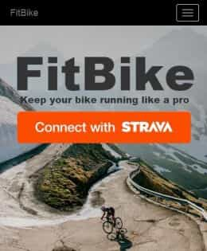
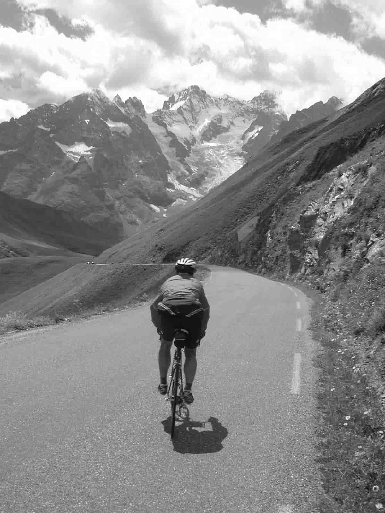
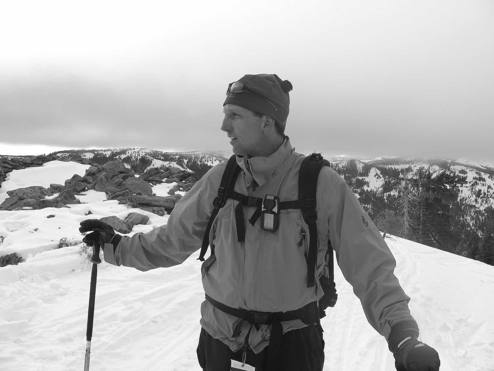

Web Dev and Pandora

With my interest in coding, I completed a 3 month immersive full stack web developement "bootcamp" class at General Assembly. My most recent app was an individual project called FitBike.
I'm most proud of FitBike. Within 3 weeks of being deployed, the app has proved to be popular with performance minded cyclists with over 200 users and 400 bikes in the database and it's growing. Since adding a option for kilometers, I now have users from all over the globe! The app uses the Strava Api to allow cyclists to know when service is needed on their bikes. It looks and works great, is mobile responsive and has been fully tested. I enjoyed building the backend code that periodically updates the database using a scheduler, queries to see if any users have bikes that need service, then sends the user a notification when service is needed.
My GA training led me to a position at Pandora. Since December of 2015, I've been working as an Application Engineer supporting large software teams.
You can see much of my recent code on GitHub and my profile on LinkedIn.
Ride

I tried out for the college football team, but failed miserably when pulling guard stepped on my foot breaking it in several places. The subsequent lack of exercise led me to gain about 30-40 pounds. I needed to do something. For some odd reason at the same time I became interested in watching and reading about the Tour de France. The history of the race is amazing. It inspired me to join the college cycling team and I fell in love the sport. Eventually I qualified and raced at the Nationals. These days I don't race but I still I love to ride and maybe more then ever.
Ski
I grew up ski racing on East coast....blue ice, rocks and getting blasted by snow making machines was the norm. But, we didn't know any better and we loved it! It doesn't matter where or how you ski, it's just about heading down the hill with two silly sticks attached to your feet. Forget the industry hype, it's not just about powder days and jumping off cliffs.
I like ski mountaineering- Sierra Traverse
And skiing with my family- April Fools
Father

I'm a husband and proud father of two boys that are clearly growing up too fast. Those two little ones are amazing and my wife is really cool! My favorite rides are with my family!
Here's a recent Utube Video we made. A combination of a recent Hollywood U2 concert and our mountain bike videos.
I look forward to hearing from you! Please contact me at LinkedIn
